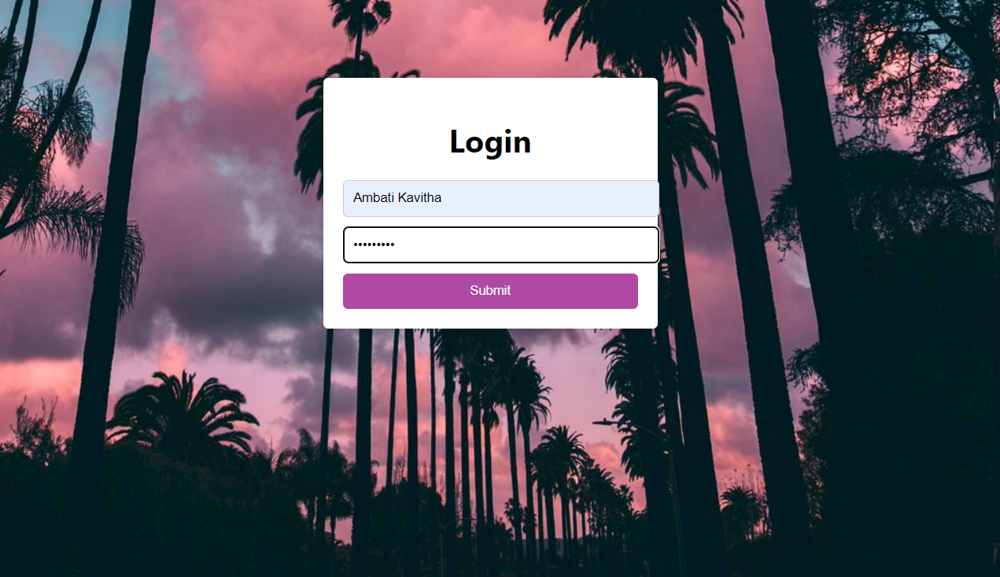

Designed and developed a video controller application, enabling users to manage and control videos through a user-friendly interface. Implemented various functionalities such as play, pause, rewind, and volume control.
Developed an innovative Smart Street Light system aimed at reducing power consumption by up to 75% in small streets with no active use.Implemented IR sensors to activate street lights only when motion or objects are detected, resulting in significant energy savings.Contributed to sustainable urban environments and efficient energy management.

Engineered enhancements for the Godavari Truss Bridge model, integrating state-of-the-art Artificial Intelligence techniques. Introduced an autonomous detection feature for high-weight objects, utilizing AI to enhance bridge safety. Designed support stands that activate automatically, ensuring the bridge's stability under substantial loads. Demonstrated the potential of AI in engineering projects and improved infrastructure resilience.

Led the development of "Life Saver," an advanced online Blood Bank Management System (BBMS). Ensured the purity and safety of stored blood for timely supply to individuals in need. Designed a transparent platform that validates user requests using valid proofs, eliminating potential scams. Contributed to critical healthcare infrastructure by enabling efficient blood management and distribution.